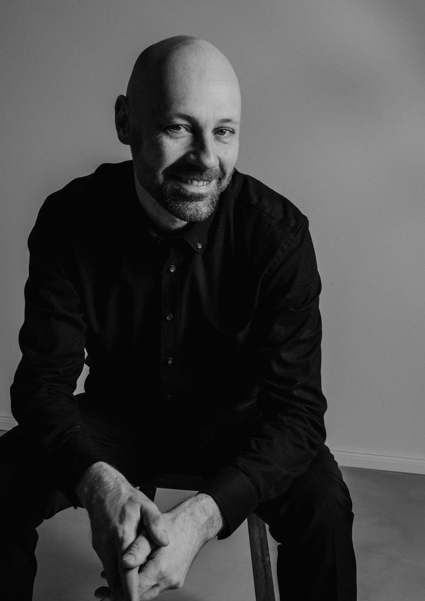
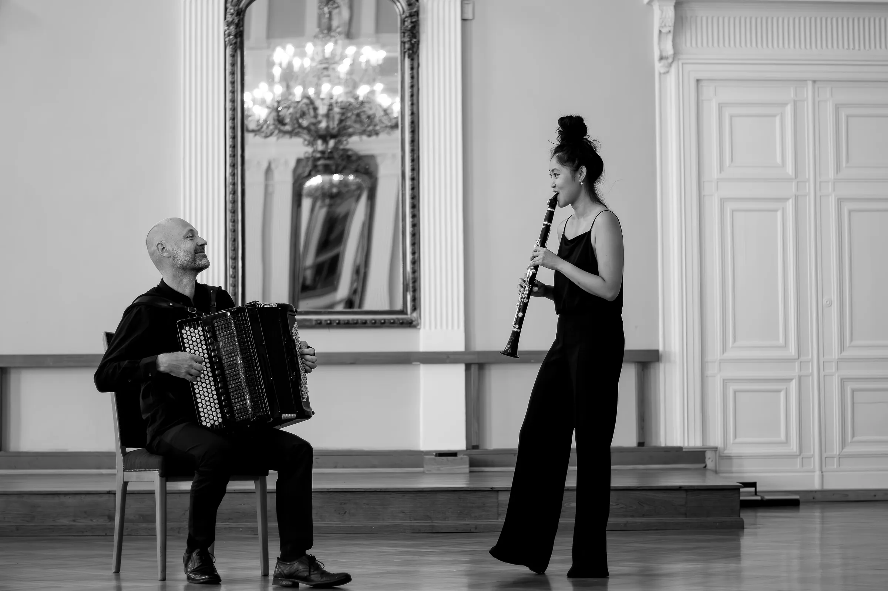
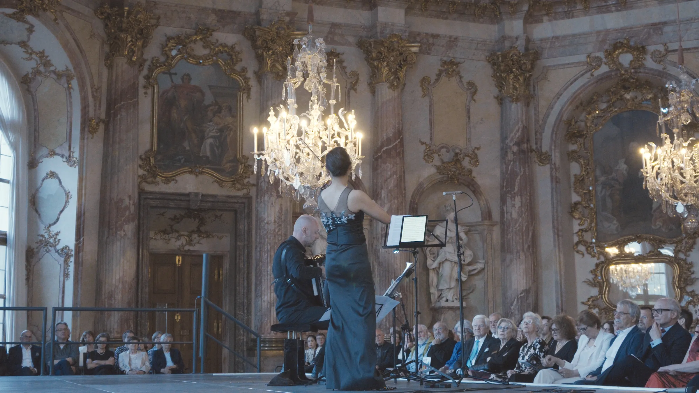
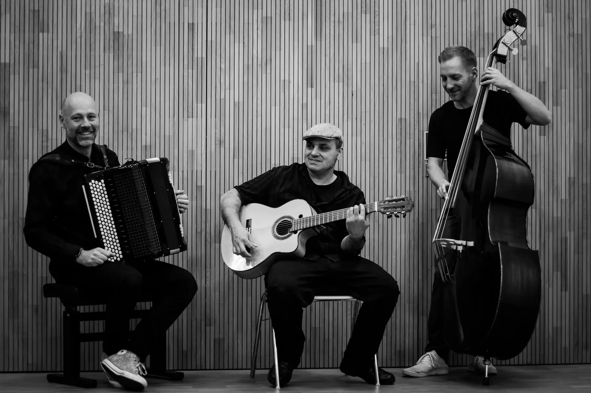

Akkordeon · Komposition · Arrangement
Accordionist & Composer
Kommende Konzerte
Über Harald Oeler
Preisträger des Internationalen Akkordeonwettbewerbs Klingenthal — Solist, Kammermusiker und Komponist zwischen Klassik, Jazz und Weltmusik.
Aktuelle Projekte

Ji Eun Kim & Harald Oeler — zwischen Bach und Neuem

Sinn Yang & Harald Oeler — Musik aus allen Kulturen

Energie, Virtuosität und die Freiheit der Improvisation